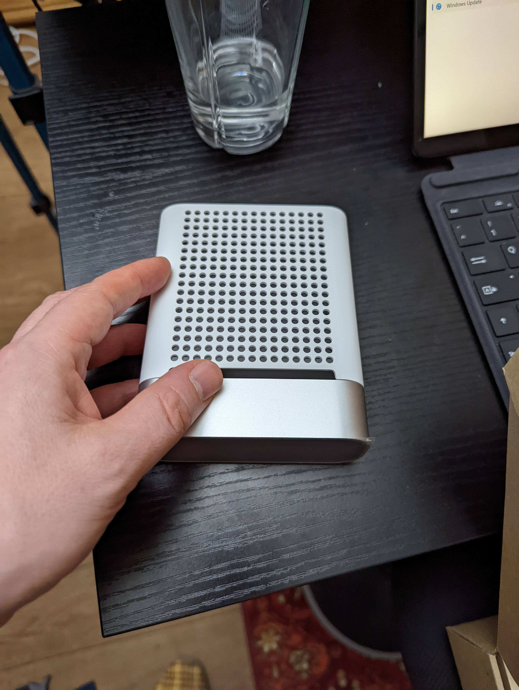
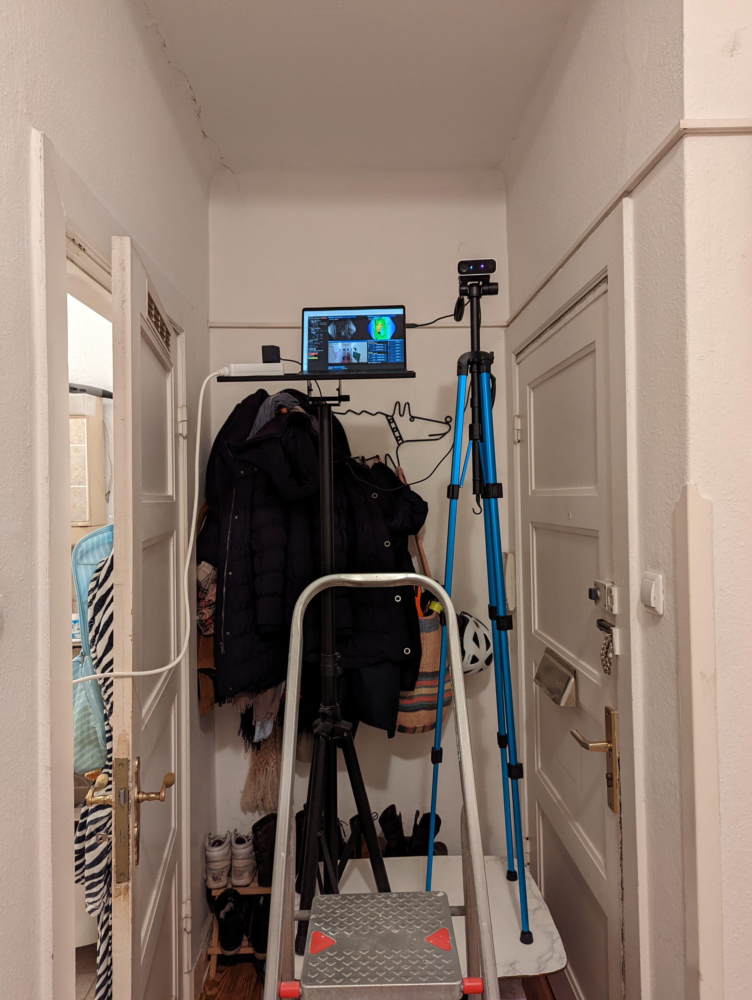

# Image Recognition with Python Oliver Zeigermann
### Morphologische Operationen, Opening, Closing https://www.cg.tuwien.ac.at/courses/EinfVisComp/Skriptum/SS14/EVC-18%20Morphologische%20Operationen.pdf
### Abstract - Our focus will be on applications, so we will not go into how things work internally, but rather how to make use of them. - use prebuilt and pretrained networks for image recognition and object detection - Applications for Autorencoder for Images - Denoising - Outlier/Error Detection - Visualization - Extract Embeddings
### Notebooks - OpenCV: https://github.com/DJCordhose/object-tracking-playground -
### Facial Recognition, Dlib
# Was geht sonst noch?
# Kinect  
### Übergang von 2d auf 3d und Tiefenkameras Computer vision research feels a bit stagnating in a local minimum of 2D texture recognition on ImageNet, COCO etc. This is great but only step 1. Unlocking further progress needs new framework: 1) the data source has to become diverse videos, not individual frames from internet (https://twitter.com/karpathy/status/1491452689825165314?t=a3kTGU5U0jk8clZKi12lyA&s=03)
Andrej Karpathy (@karpathy) twitterte um 6:16 AM on Do., Feb. 17, 2022: Is simulation the dark horse of 99% of the training FLOPS in future "foundation models" of computer vision? (https://twitter.com/karpathy/status/1494178962422984706?t=dsqu5ZfAbJ1L3ZrozJbTyQ&s=03)
Ronnie Clark (@ronnieclark__) twitterte um 6:04 PM on Di., Feb. 15, 2022: After a long review+revision period (~2 years), our paper on Orientation Keypoints will appear in IEEE TPAMI! We introduce "virtual" markers placed around bones to accurately estimate body pose. (1/6) Project page: https://t.co/5j1qA7Oz8w https://t.co/6gR8ofL4kE (https://twitter.com/ronnieclark__/status/1493632232669470725?t=ypeO9dRSe-9u-LspdRhEDA&s=03)
Kinect - https://unboundvr.de/zakelijk/index.php/microsoft-azure-kinect-dk - https://unboundvr.de/zakelijk/index.php/microsoft-azure-kinect-blog 3D Scanning - Flowchart: https://twitter.com/ntschk/status/1491268338814959617
### OpenCV https://github.com/opencv/opencv_contrib https://docs.opencv.org/4.x/d3/db4/tutorial_py_watershed.html